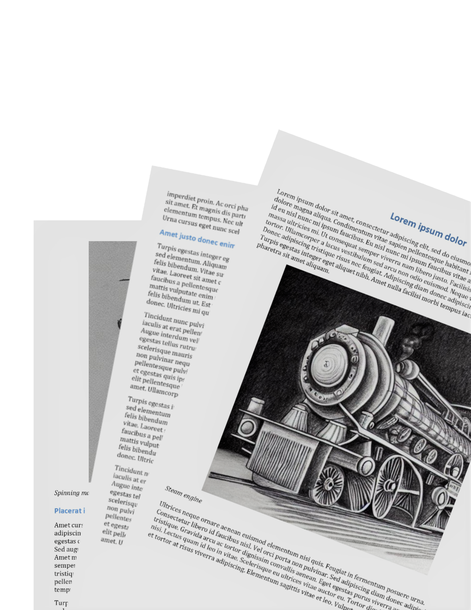

28 July -
1 August 2025
Lund, Sweden
The World Economic History Congress (WEHC) is an international and interdisciplinary event, taking place every third year, placing economic history at its core. The congress appeals not only to economic historians but also to historians, political scientists, management scientists, sociologists, demographers, geographers, anthropologists, ethnographers, psychologists, philosophers, historians of science and technology, and natural and life scientists. Researchers from around the world are cordially invited to participate.
The theme for the 2025 Congress is “Equality and Sustainability Challenges.” This theme underscores some of the pressing issues humanity faces today and draws connections to a diverse array of historical problems. To both understand and address these challenges, and to derive insights from the historical record, a range of perspectives is essential.
We look forward to welcoming you to Lund in July 2025!

Days Hours Minutes Seconds
We have a particularly strong desire to attract sessions related to the theme Equality and Sustainability Challenges. However, submissions are welcome on the economic and social histories of all places and periods, and on the exploration of varied sources and methods, and on the theory and uses of economic history itself.
As a new initiative, the IEHA invites session proposals from member associations. Sessions can be on any area of economic and social history, but should aim to highlight work by scholars affiliated to member associations – whether those are defined thematically or geographically.
Get in touch with the organizing committee here.